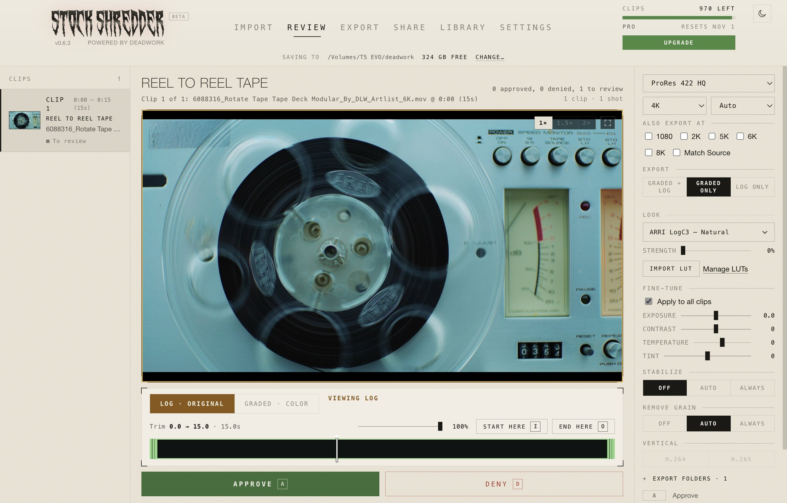

Stock Shredder · For Blackmagic shooters
Blackmagic RAW to Stock Clips, Fast
BRAW gives you a lot to work with. It also gives you big files and a flat image that no stock site will take as is. Here's the fast way through.
The short version
- Grade Blackmagic Film to a light Rec 709.
- Cut 10 to 20 second clips, one shot each.
- Export ProRes 422 HQ in a MOV, audio off.
- Keep your frame rate. Skip 48 fps for Adobe Stock.
- Big 6K and 8K files: watch each site's size cap.
Stock Shredder reads BRAW natively and does it in one pass. 1,000 graded 4K clips took 3 hours 1 minute in our test.
Great raw files, slow to sell.
Pocket, Pyxis and URSA cameras record BRAW that grades beautifully. But no stock site takes a .braw file. Every shot has to be trimmed, debayered, graded and exported before it can go anywhere.
At about 2 minutes a clip, a 500-clip shoot is 16+ hours in Resolve. Most of it is the same steps again and again.
BRAW footage, stock site rules.
- Grade it. Blackmagic Film is flat on purpose. Adobe Stock won't take uncorrected log, and Shutterstock prefers Rec 709. Keep the grade light.
- Deliver ProRes or H.264. In a MOV or MP4. That's on every site's list. BRAW isn't.
- Size. Don't upscale. 6K and up can stay native on Pond5, which takes up to 8K.
- File size caps. Adobe Stock 3.9 GB, Pond5 5 GB at 4K to 6K, Shutterstock 10 GB. Short clips stay under.
- Frame rates. 48 works on Pond5 and Shutterstock, not Adobe Stock.
- Audio off. Unless the sound is the point of the clip.
Sources: Adobe Stock technical requirements, Shutterstock video requirements, Pond5 footage guidelines. Checked November 2026. Full comparison in How to Prepare Footage for Adobe Stock, Pond5 and Shutterstock.
The by-hand way.
- Import the BRAW files into DaVinci Resolve.
- Scrub and set an in and out for each shot.
- Grade Blackmagic Film to Rec 709 with a LUT or color space transform.
- Render each shot as its own ProRes file.
- Name the file and its folder.
- Write a title and keywords.
Our average is about 2 minutes per clip, every clip.
The Stock Shredder way.
Point Stock Shredder at the card dump on your Mac or Windows computer.

- It reads BRAW. Natively, straight from the card. CinemaDNG from Blackmagic cameras works on macOS.
- It finds the moments. Usable shots are found and trimmed inside the length you set.
- It grades. Load your Blackmagic Film to Rec 709 LUT once. Fine-tune exposure, contrast, temperature and tint.
- It exports. ProRes 422 HQ up to 8K, graded, log or both in one pass.
- It checks. Logos, HDR, wrong frame rates and footage under 2K are flagged before you upload.
- It names and keywords. Clean names, a folder per clip, and keywords ready to paste.

The time difference, measured.
Our benchmark: real Sony FX6 and FX3 footage on a MacBook Pro M3 Pro, exported to an external SSD as graded ProRes 422 HQ 4K. BRAW times depend on resolution and your computer.
| 4K clips | Stock Shredder | By hand |
|---|---|---|
| 100 | 16 min | 3+ hours |
| 500 | 1 hr 19 min | 16+ hours |
| 1,000 | 3 hr 1 min | 33+ hours |
Stock Shredder time is shred plus export. Review time not included. By hand: 2 minutes per clip average.
What to know before you start.
Stock Shredder handles the repetitive parts. A few things stay with you.
- You review. It finds the usable shots. Your eye picks the ones that sell.
- You bring the LUT. Use the Blackmagic Film to Rec 709 LUT you already trust, and it applies in one click.
- You upload. Names and keywords are ready to paste into each site.
- It keeps the log copy too. Export graded and log in one pass, for sites or buyers that want both.
When by hand still makes sense.
- Hero shots where you want to push the raw settings, like ISO or white balance, shot by shot.
- Clips built from several shots, like a speed ramp.
For a full card, every clip needs the same steps. That's the part worth handing off.
FAQ
Can I upload Blackmagic RAW files to stock sites?
Not as .braw. Adobe Stock, Shutterstock and Pond5 want MOV or MP4. Grade the BRAW to Rec 709 and export ProRes or H.264.
Do I have to grade Blackmagic Film footage for stock?
Yes. Adobe Stock won't take uncorrected log and Shutterstock prefers Rec 709. A light conversion from Blackmagic Film to Rec 709 is enough. Buyers grade it again.
What resolution should I export BRAW at for stock?
The size you shot, or UHD or DCI 4K if you shot 6K or above and the site doesn't list your size. Don't upscale.
Does Stock Shredder read BRAW?
Yes. Blackmagic RAW is read natively, and CinemaDNG from Blackmagic cameras works on macOS. Load your Blackmagic Film to Rec 709 LUT and it applies to every clip.
How long does it take to prepare 1,000 stock clips?
By hand, about 33 hours at 2 minutes a clip. In our test, Stock Shredder shredded and exported 1,000 graded 4K ProRes clips in 3 hours 1 minute, not counting review.